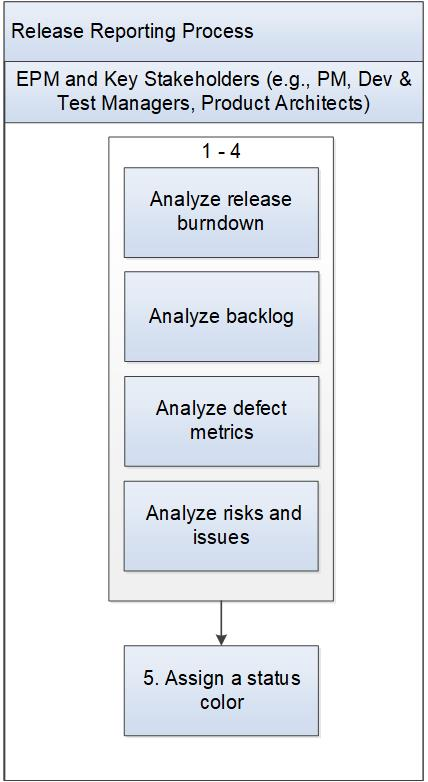

Release Reporting Process¶
This process describes how the Engineering Program Manager (EPM) and Key Stakeholders (e.g., PM, Dev and Test Managers, Product Architects, Scrum team) work together to analyze and reports project status. The EPM is responsible for reporting the release status and the reporting frequency is identified on a per-project basis.
Entry Criteria |
Program status is needed. |
Inputs |
|
Exit Criteria |
Status charts are displayed in the EPM tool (e.g., Panorama) project page with an assessment of program release status. |
Outputs |
EPM tool project page is populated with data. |
Activities¶

Step # |
Activity Name |
Description |
|---|---|---|
1 |
Analyze release burndown |
The release burndown displays work delivered so far in the release to predict whether the release date will be met. The EPM and Key Stakeholders analyze the chart to determine if the scope of work for the release is too large to finish. |
2 |
Analyze Epics/Stories backlog |
The EPM and Key Stakeholders analyze the amount of work remaining in the backlog up to the release cut off point and determine how probable it is, given the current performance of the team, that all the remaining work will be accomplished by the planned date. |
3 |
Analyze defect metrics |
At the appropriate time in the program, the EPM and Key Stakeholders analyze the trend showing the incoming rate of defects and the fix rate to predict if defect fixing will complete by the planned date. The EPM and Scrum Master may also look at the rate of defect verification and publication to determine if verification and publication policies will be met. |
4 |
Analyze risks and issues |
The EPM and Key Stakeholders determine the top risks and issues and analyze if the mitigation strategy is working, or needs to be changed. |
5 |
Assign a status color |
The EPM and Key Stakeholders determine a status color of green, yellow, or red based on risk. See Risk Management Process |
Change Log¶
Date |
Change Request ID |
Version |
Change By |
Description |
05/21/2020 |
N/A |
0.1 |
Shree Vidya Jayaraman |
Initial Draft |
06/18/2020 |
N/A |
0.2 |
Shree Vidya Jayaraman |
Minor edits based on Rodger’s feedback |
06/22/2020 |
N/A |
0.3 |
Shree Vidya Jayaraman |
Minor edits based on Rodger’s feedback |